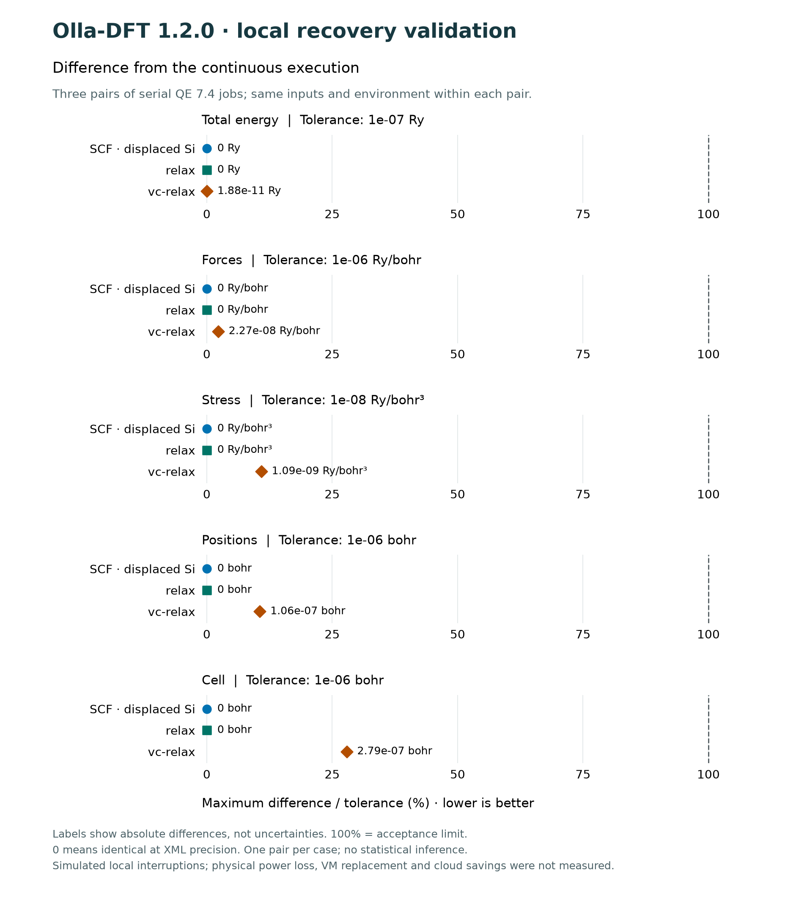

How does a material respond to light? What changes when you compress it? Olla-DFT helps study these questions on a computer and turn the results into charts you can explore and share.
Olla-DFT organizes work with Quantum ESPRESSO, the program that runs the simulations of atoms and electrons.
These charts come from existing calculations. You do not need to understand every symbol: start with the question and explanation on each card.
Bands and DOS · silicon
How do its electrons behave?
The lines show the energies that electrons can have in silicon. They help study electronic behavior, which matters when researching materials for devices.
These examples show what the tool can help study. They do not guarantee the same behavior in other materials or replace the checks needed for each research project.
02 / TRY IT
Try turning results into a chart
Open an example with eight ready-made results. Change its appearance and download an image without installing Olla-DFT, uploading files or running a simulation.
Look at the example
Choose English in the Idioma menu. Each dot is one saved result, not an animation of atoms.
Make it your own
Open “Customize appearance” and change the title, color or size.
Save an image
Choose “PNG · image” to use it in a presentation. “CSV · table” opens the data in a spreadsheet.
This demo helps you learn the interface. Its points are not a series of comparable experiments. Appearance changes only affect your copy.
03 / KEEP GOING
If a calculation stops, must you start over?
Olla-DFT can save restart points for certain calculations. If the disk survives and the saved data is valid, it can resume work when restarted.
Save
Keep progress on a persistent disk.
Check
Check that saved data is complete and compatible.
Continue
Resume from a valid point when possible.
What did we check? In three small tests, we interrupted processes and compared the recovered result with an uninterrupted run. Differences stayed within the acceptance limits defined for those tests.
This does not guarantee recovery from every power outage or disk loss.
See the tests, numbers and limits
Reading this figure: each mark shows how much a recovered result differs from the uninterrupted one. The 100% line is the acceptance limit; the marks stay below it. A zero means agreement at the recorded precision, not absolute physical accuracy.

Serial QE 7.4; one SCF pair, one relax pair and one vc-relax pair, without statistical repetitions. Inputs and environment match within each pair. Local process interruptions were simulated; physical power outages and disk loss were not tested.
The PDF collects the charts and their conditions. To work with your own materials, the repository explains how to install the application and prepare calculations.
{kind=link}
{kind=link}
{kind=link}
{kind=link}
{kind=link}
{kind=link}